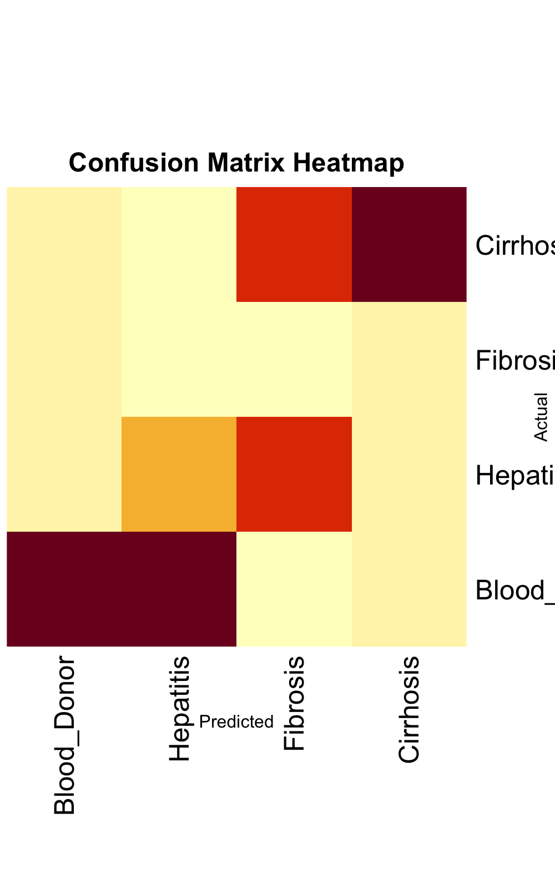
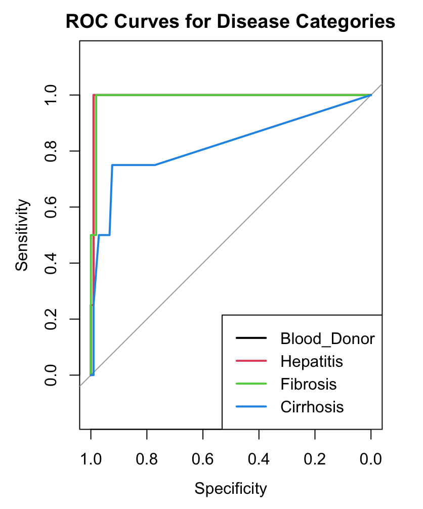

Hepatitis C Data Analysis
1 Hepatitis C Data Analysis
This webpage consolidates the detailed research conducted for three distinct research questions based on the Hepatitis C dataset. Each section retains the original formatting and content from the individual webpages.
1.1 Research Question 1: Age and Liver Enzymes
1.1.1 0.1 Overview
Research Question 1: How do liver enzyme levels (ALP, ALT, AST) change with age in people with hepatitis C compared to healthy individuals?
This research investigates how liver enzymes, which are important for diagnosing liver issues, vary as people get older, especially comparing those with hepatitis C to healthy people.
1.1.2 0.2 Data Preparation and Analysis
Data Preparation
- Focused on age and liver enzymes (ALP, ALT, AST) by removing missing values and grouping data into age categories (‘Young’, ‘Middle-aged’, ‘Senior’).
Model Training and Validation
- A Random Forest model with 10-fold cross-validation achieved: - R-squared: 0.937 (explaining 93.7% of variability in Albumin levels). - RMSE: 0.035 (high precision in predictions).
1.1.3 0.3 Visualizations
Enzyme Level Analysis by Age Group
Residuals vs. Fitted Values Plot
1.1.4 0.4 Approaches Considered and Rejected
- Non-linear Models: Rejected due to the risk of overcomplication.
- Polynomial Regression: Avoided for simplicity and interpretability.
1.1.5 0.5 Real-World Application
- Early Diagnosis: Understanding enzyme changes aids in spotting liver issues early.
- Personalized Treatment: Tailored treatments based on enzyme changes with age.
1.2 Research Question 2: Gender Influence on Biochemical Responses
1.2.1 0.1 Overview
Research Question 2: Does gender influence biochemical responses in hepatitis C patients?
This question explores how Gamma-Glutamyl Transferase (GGT), an enzyme crucial for assessing liver health, varies between male and female hepatitis C patients.
1.2.2 0.2 Data Preparation and Analysis
Data Preparation
- Focused on variables like gender, GGT levels, age, and hepatitis C status. - Removed missing values for accuracy.
Statistical Analysis
- ANOVA and Multiple Regression Models: Quantified gender differences and interactions with age. - Interaction Effects: Explored age and gender interaction on GGT levels.
1.2.3 0.3 Visualizations
- Interaction of Category, Sex, and Age on log(GGT) Levels
1.2.4 0.4 Real-World Application
- Tailored Treatment Strategies: Insights enable personalized treatments for males and females.
- Enhanced Disease Understanding: Improves understanding of gender-biased biochemical responses.
1.3 Research Question 3: Predicting Severity of Liver Disease
1.3.1 0.1 Overview
Research Question 3: How can we predict the severity of liver disease in patients?
The goal was to classify disease stages using biochemical markers and demographic data, aiding in early diagnosis and treatment.
1.3.2 0.2 Methodology
Predictive Modeling
- Models: Random Forest and Multinomial Logistic Regression. - Validation: Cross-validation to prevent overfitting.
Evaluation
- AUC Scores: - Blood Donor: 0.99 - Hepatitis: 0.99 - Fibrosis: 0.99 - Cirrhosis: 0.82
1.3.3 0.3 Visualizations
Confusion Matrix Heatmap
ROC Curves for Disease Categories
Variable Importance Plot

1.3.4 0.4 Real-World Application
- Support for Clinical Decisions: Enhances diagnostic accuracy.
- Managing Healthcare Resources: Prioritizes care for severe cases.
1.4 Conclusion
The consolidated analysis across these research questions provides a comprehensive understanding of liver disease dynamics, enabling improved diagnostic and treatment methods.
1.5 References
UCI Machine Learning Repository: Hepatitis C Virus (HCV) Dataset. Available at: https://archive.ics.uci.edu/dataset/571/hcv+data.
Professor’s Notes on ANOVA
- Unit 3 and Unit 4 Notes: Detailed theoretical and practical applications.
Box, G. E. P., Hunter, J. S., & Hunter, W. G. (2005). Statistics for Experimenters. Wiley.
Montgomery, D. C. (2017). Design and Analysis of Experiments. Wiley.
Neter, J., Wasserman, W., & Kutner, M. H. (1996). Applied Linear Statistical Models. McGraw-Hill.